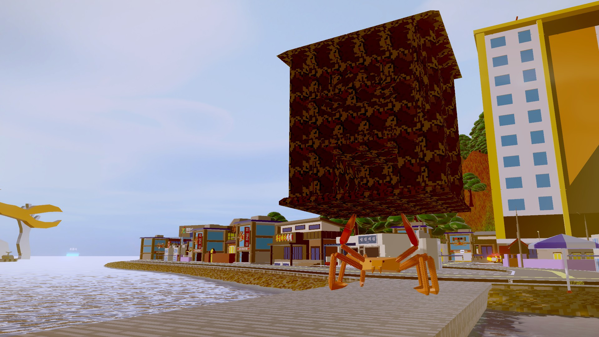
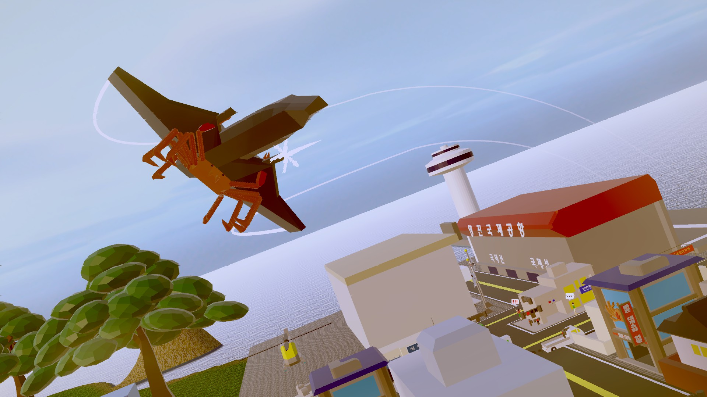
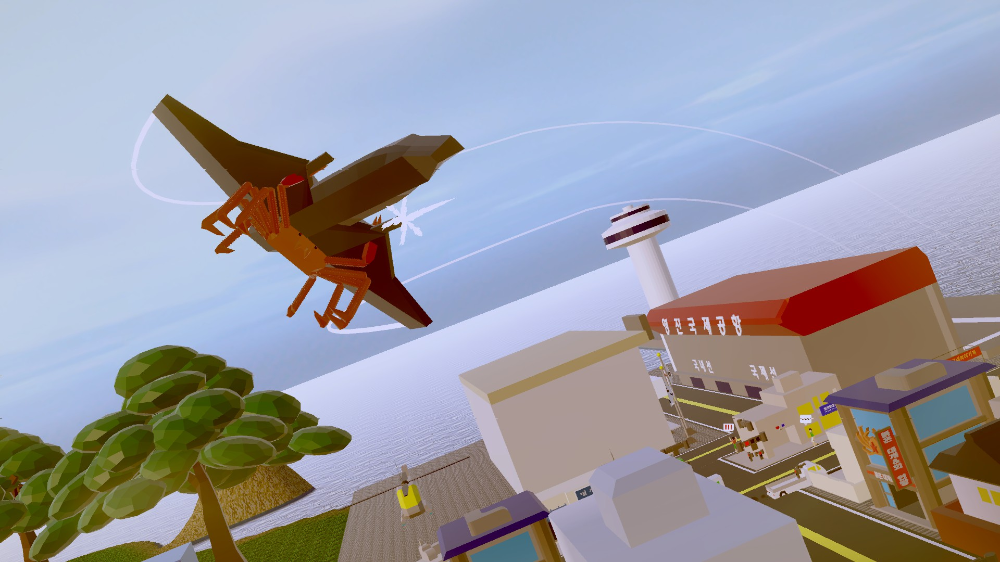
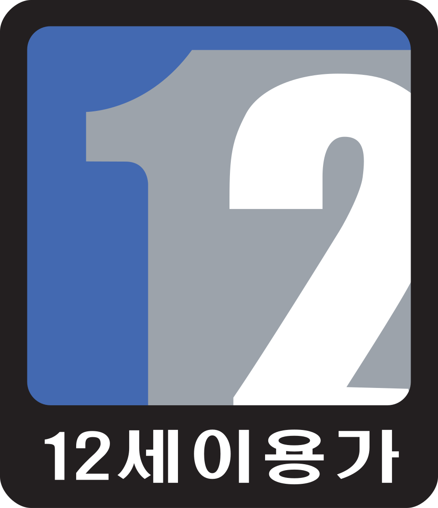
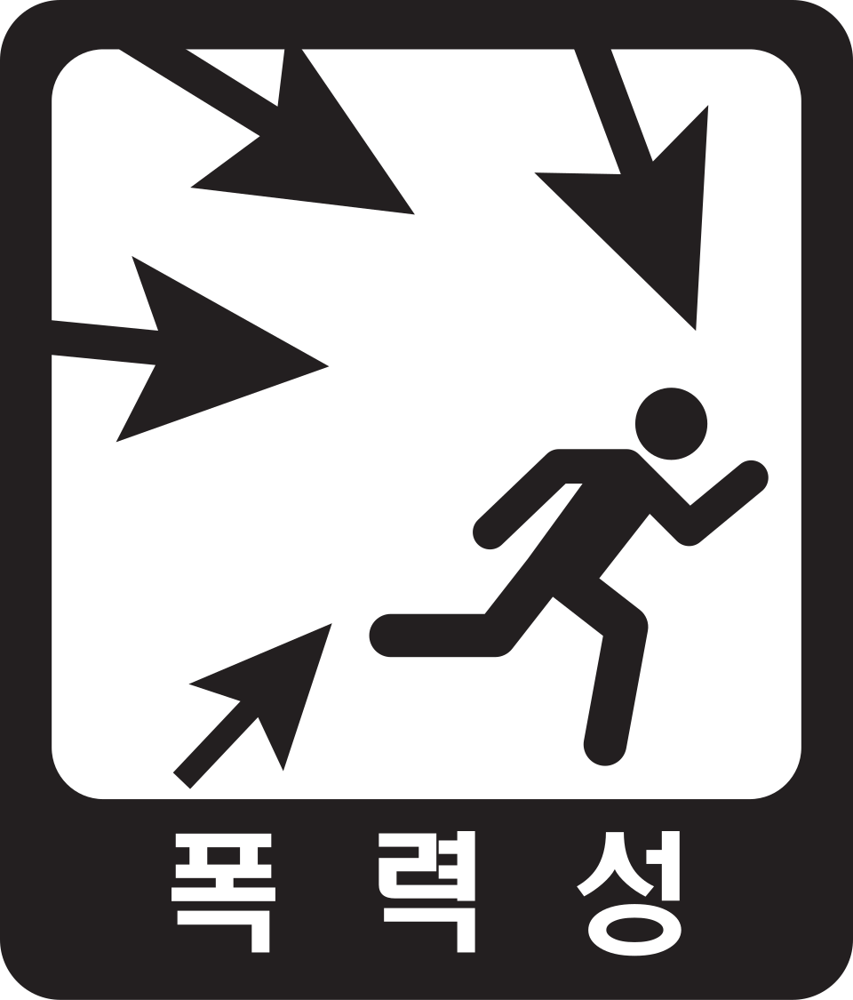

Wishlist on Steam!!!
Trailer
슈퍼 대게 시뮬레이터는 대게가 되어, 납치된 수많은 대게들을 해방시키면서
주요 도시를 파괴하는 3인칭 파괴 액션 (준)오픈월드 어드벤처 게임입니다.
Super Kingcrab Simulator is a third-person destruction action (semi) open-world
adventure game where you become a mighty king crab,
liberate countless kidnapped crabs, and lay waste to major cities.
Screenshots

 

Platforms
List of Showcase


PressKit
Google DriveOther
 등급분류번호 (GRAC) : SGHS-SP-250610-0005
등급분류일 : 2025.06.10 14:44
產品名稱(中文)：超級帝王蟹模擬器
產品名稱(原文)：Super Kingcrab Simulator
遊戲類型：冒險
上市日期：2025/07/01
SkagoGames 2025. made in Skago.